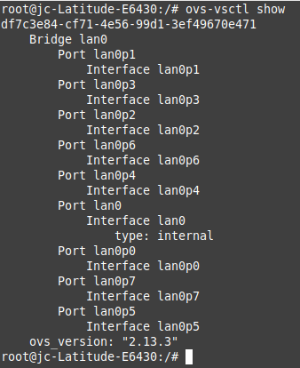

Laboratorio 2. VLAN con Open vSwitch
1. Introducción
 |
Open vSwitch es una herramienta que funciona exactamente igual que lo haría un Switch multicapa normal y corriente, pero que es totalmente virtual. |
Open vSwitch, principalmente es usada para automatizar grandes cantidades de redes que en la vida real sería muy costoso de realizar, teniendo así la capacidad de por ejemplo, segmentar redes en diferentes subredes virtuales, como se verá en este laboratorio.
Open vSwitch, es un software de código abierto, diseñado para ser utilizado como un switch virtual en entornos de servidores virtualizados. Es el encargado de reenviar el tráfico entre diferentes máquinas virtuales (VMs) en el mismo host físico y también reenviar el tráfico entre las maquinas virtuales y la red física.
2. Escenario
La instalación y posterior uso del switch virtual se va a realizar sobre un equipo anfitrión con sistema operativo Linux, para este caso, Linux Mint 20 Mate.
Figura 1. Equipo Linux Mint 20 Mate (Anfitrión).
| Figura 2. Equipo Windows 10 Enterprise (Huésped 1) | Figura 3. Equipo Ubuntu Desktop 20.04.3. (Huésped 2) |
El equipo anfitrión tiene una interfaz wireless con conexión a internet, otra para el conexionado por cable, otra para el loopback y por último la de virtualbox.
Figura 4. Interfaces de red del equipo Linux Mint 20 Mate (Anfitrión).
En la siguiente figura, se tiene el esquema de red a implementar, donde se instalará el virtual switch en el equipo anfitrión y posteriormente, se conectarán al mismo los 2 equipos invitados (Windows 10y Ubuntu Desktop).
{kind=link}
Figura 5. Esquema de red a implementar.
3. Instalación de Open vSwitch
Hay disponible un manual en esta página: https://docs.openvswitch.org/en/latest/intro/install/general/, donde se puede consultar para ampliar y/o consultar todo sobre el programa.
En primer lugar, para facilitar la ejecución de los comandos y dado que en la mayoría de ellos hay que ser root, iniciamos una sesión root mediante el siguiente comando:
jc@jc-Latitude-E6430:~$sudo -s
A continuación, se actualizan los repositorios locales y se actualiza el sistema:
root@jc-Latitude-E6430:~# apt update -y && apt upgrade -y
Figura 6. Actualización del equipo.
Una vez actualizado el equipo, ya se puede comenzar a instalar el programa, para ello, se ejecuta el siguiente comando:
root@jc-Latitude-E6430:~# apt install -y openvswitch-switch
Figura 7. Instalar Open vSwitch.
Una vez instalado se comprueban los módulo que se han cargado de openvswitch, para ello, hay que ejecutar el siguiente comando:
root@jc-Latitude-E6430:~# /sbin/lsmod | grep openvswitch
Figura 8. Comprobar los módulos cargados.
4. Configuración del vswitch
Un bridge es un dispositivo de interconexión de redes que opera en la capa 2 (nivel de enlace de datos) del modelo OSI.
Inicialmente el bridge no está creado por lo que no tiene asignado ningún puerto/interfaz. Para consultar los bridges definidos y las interfaces, el comando es el siguiente:
root@jc-Latitude-E6430:~#ovs-vsctl show
Figura 9. Consultar los bridges definidos.
Para crear un nuevo bridge (switch virtual) en el equipo, hay que ejecutar el siguiente comando donde lan0 es el nombre elegido para el mismo. Con ovs-vsctl show, se comprueba que se ha creado correctamente.
root@jc-Latitude-E6430:~#ovs-vsctl add-br lan0
root@jc-Latitude-E6430:~#ovs-vsctl show

Figura 10. Consultar los bridges definidos.
Opcionalmente, se le puede configurar una dirección ip al bridge, el comando es el siguiente:
root@jc-Latitude-E6430:~#ip addr add 192.168.0.100/24 dev lan0
Además de añadir interfaces físicos es necesario crear interfaces virtuales (ethernet virtuales) que son las llamadas tap (dispositivos tun/tap) para poder vincularlas a los equipos cliente (guests) más tarde.
Los dispositivos tun/tap proveen de recepción y transmisión de paquetes para programas de usuario y pueden ser vistos como dispositivos simples Punto-a-Punto o dispositivos Ethernet.
Para este caso de ejemplo, se van a crear 8 interfaces virtuales (8 puertos del switch) mediante las instrucciones siguientes:
for tap in `seq 0 7`; do
ip tuntap add mode tap lan0p$tap
done;
Figura 11. Bucle de creación de las interfaces virtuales.
A continuación, se comprueban las interfaces que se acaban de crear mediante el siguiente comando:
root@jc-Latitude-E6430:~#ip tuntap list
Figura 11. Comprobación de las interfaces tuntap.
Si se consultan las interfaces del equipo, se puede observar que se tienen disponibles las creadas anteriormente pero están bajadas (DOWN):
root@jc-Latitude-E6430:~#ip link

Figura 12. Comprobación de las interfaces tuntap.
Como se puede observar en la imagen anterior, las interfaces están bajadas (down). Por el momento no se realizará el 'up' de las mismas hasta que no se hayan conectado los equipos. Una vez el equipo se configure con una interfaz virtual, se podrá ejecutar el comando ip link set lan0p0 up, para levantar la interfaz lan0p0 por ejemplo.
Vincular los dispositivos tap al switch "lan0"
El siguiente paso es vincular los dispositivos tap al switch "lan0", para ello, hay que ejecutar el siguiente conjunto de instrucciones:
for tap in `seq 0 7`; do
ovs-vsctl add-port lan0 lan0p$tap
done;
Figura 13. Vincular los dispositivos tap al vswitch.
Para consultar los dispositivos tap que están en los puertos del switch lan0 y comprobar que el comando anterior se ha realizado de manera exitosa, el comando es el siguiente:
root@jc-Latitude-E6430:~#ovs-vsctl list-ports lan0
Figura 14. Consultar los dispositivos tap del vswitch.
En estos momentos se tiene un switch virtual de 8 puertos llamado lan0 con 8 interfaces tap vinculadas al mismo. Para consultar los bridges definidos (en este caso sólo se ha definido el lan0) y las interfaces, el comando es el siguiente:
root@jc-Latitude-E6430:~#ovs-vsctl show

Figura 15. Consulta de los bridges definidos y las interfaces.
5. Conectar los equipos de la red (máquinas virtuales - guest) al switch virtual
El siguiente paso es conectar los equipos (VMs de virtualbox) al switch virtual, para ello, hay que configurar el adaptador de red de los mismos de la siguiente manera:
- Conectado a: 'Adaptador puente'.
- 'Nombre:' hay que seleccionar un tap disponible de los 8 del switch virtual. Para este caso, para el equipo Ubuntu Desktop se selecciona el lan0p0 (número de puerto 0 del switch) y para el equipo Windows 10 el lan0p1 (número de puerto 1 del switch).
| Cuando se despliegue el Nombre, aparecen todos las interfaces disponibles, tanto las físicas como las virtuales. | Figura 16. Equipo Ubuntu Desktop 20.0.4.3. | Figura 17. Equipo Windows 10 Enterprise. |
Con esto, lo que se consigue es conectar las 2 máquinas virtuales en una red virtual.
5.1 Pruebas de conectividad
Para comenzar con las pruebas, hay que poner en marcha las 2 máquinas virtuales. Una vez se haya iniciado sesión en las mismas, hay que subir las interfaces lan0p0 y lan0p1 en el equipo Anfitrión mediante los siguientes comandos:
root@jc-Latitude-E6430:~# ip link set lan0p0 up
root@jc-Latitude-E6430:~# ip link set lan0p1 up
A continuación, se comprueban las interfaces y como se puede observar en la figura inferior, están 'up':
Figura 18. Consulta las interfaces.
Otra forma de comprobarlo es mediante el siguiente comando que permite conocer los datos estadísticos de cada puerto. Se puede observar que el puerto 1 y 2 están up (config: 0 y state:0) y el LOCAL (lan0) también.
root@jc-Latitude-E6430:~#ovs-ofctl show lan0
Figura 19. Consulta los datos estadísticos de cada puerto del vswitch.
A continuación, se muestra la tabla ARP del switch para poder ver en qué puerto está conectado cada equipo y la VLAN a la que pertenece.
root@jc-Latitude-E6430:~#ovs-appctl fdb/show lan0

Figura 20. Consulta la tabla ARP del vswitch.
Como se puede observar, la salida del comando corresponde a los equipos Ubuntu Desktop 20.04.3 y Windows 10 (ver imágenes inferiores) que están conectados en el puerto 1 y 2 del switch respectivamente. Además, también se puede observar que están en la misma VLAN (la 0).
| Figura 21. Configuración IP del equipo Windows 10 Enterprise. | Figura 22. Configuración IP del equipo Ubuntu Desktop 20.04.3 LTS. |
A continuación, para probar la conectividad se realizará un ping del equipo Windows 10 al equipo Ubuntu Desktop y viceversa.
 |
|
| Figura 23. Configuración IP del equipo Windows 10 Enterprise. | Figura 24. Configuración IP del equipo Ubuntu Desktop 20.04.3 LTS. |
Como se puede observar en las figuras superiores, los dos equipos contestan a las solicitudes ya que están en la misma VLAN.
6. Configurar cada equipo en una VLAN diferente
En este apartado, se va a configurar en el switch una VLAN diferente para los equipos clientes conectados al mismo. El puerto 1 (lan0p0) se etiquetará con 10 y el puerto 2 (lan0p1) se etiquetará con 20. Una vez realizado la configuración, se realizará un ping entre los dos equipos para comprobar que ya no tienen conexión. El comando tiene la siguiente sintaxis:
- ovs-vsctl set port [puerto] tag=etiqueta. Donde el puerto será lan0p0, lan0p1, etcétera y la etiqueta será el número de la VALN, ejemplo: 10, 20, etcétera.
Para este caso de ejemplo, la primera VLAN (donde está conectado el equipo Ubuntu Desktop) tendrá el id 10 y la segunda (donde está conectado el equipo Windows 10) el id 20.
root@jc-Latitude-E6430:~#ovs-vsctl set port lan0p0 tag=10
root@jc-Latitude-E6430:~#ovs-vsctl set port lan0p1 tag=20
Figura 25. Etiquetado de las VLAN.
| Figura 26. Ping al equipo Ubuntu Desktop. | Figura 27. Ping al equipo Windows 10 Enterprise. |
7. Otras operaciones
Otros comandos referidos a la obtención de datos estadísticos son:
Contadores de paquetes:
root@jc-Latitude-E6430:~#ovs-ofctl dump-flows lan0
Figura 28. Contador de paquetes.
Datos estadísticos de todos los puertos del vswitch:
root@jc-Latitude-E6430:~#ovs-vsctl list Interface
Figura 29. Datos estadísticos de todos los puertos del vswitch.
Otros comandos interesantes a conocer es cómo borrar los puertos que se han creado, el bridge, etc..
1. Eliminar los puertos asociados al bridge lan0.
root@jc-Latitude-E6430:~#ovs-vsctl del-port lan0 lan0p0
2. Eliminar el bridge lan0
root@jc-Latitude-E6430:~#ovs-vsctl del-br lan0
3. Eliminar las interfaces virtuales creadas
root@jc-Latitude-E6430:~#ip tuntap del mode tap lan0p0
8. Referencias
Obra publicada con Licencia Creative Commons Reconocimiento No comercial Compartir igual 4.0